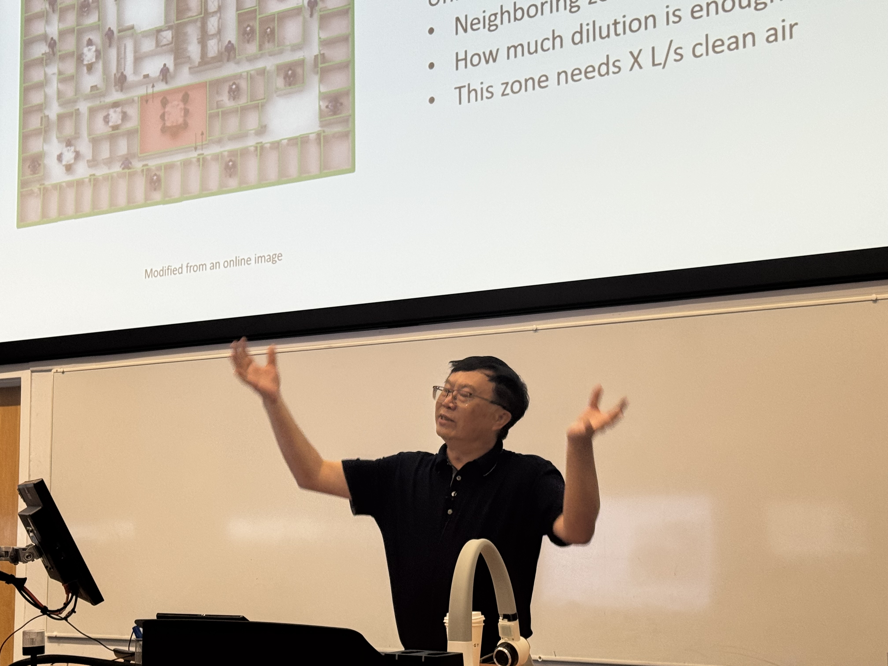
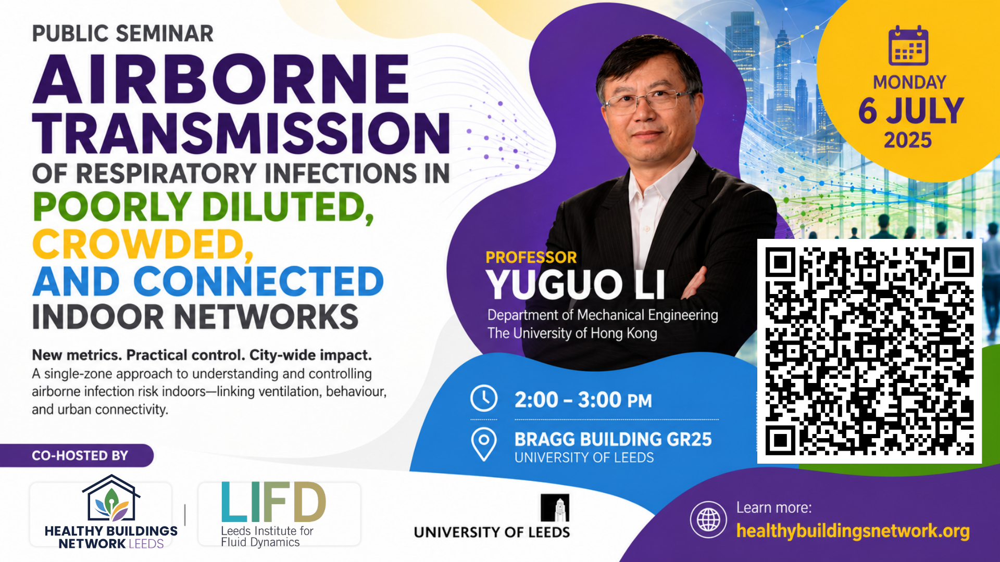
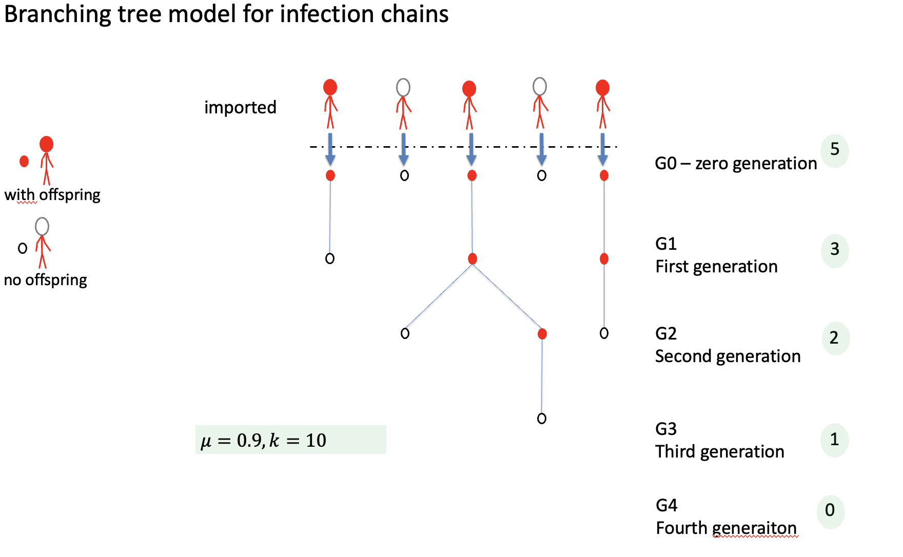

How do you explain superspreading events? Why do influenza and COVID-19 behave so differently if both travel through the air? And can we model infection risk across an entire city without losing the complexity of what happens inside a single room?
These were the questions at the heart of yesterday's seminar. Rather than presenting an incremental improvement to an existing model, Professor Li proposed something more ambitious: a rethinking of the theoretical foundations used to model airborne infection transmission altogether.

Moving beyond the Wells–Riley paradigm
For decades, the Wells–Riley equation has underpinned much of our understanding of airborne infection risk. Enormously influential — but Professor Li argued that quanta-based approaches struggle with one of the defining features of respiratory epidemics: superspreading.
His alternative is a particle-based framework that follows infectious particles rather than abstract quanta. This shift opens the door to modelling infection risk across multiple scales simultaneously — from close contact between two people, to a single room, to an entire building, to a whole city.
A central message: simplicity and realism do not have to be mutually exclusive. By defining the right assumptions carefully, highly complex building systems can be represented without becoming computationally intractable.

Two new concepts worth knowing
Clean Air Equivalent (QE)
Instead of measuring ventilation alone, QE combines all the mechanisms that remove infectious aerosols from a space — ventilation, filtration, deposition, viral deactivation, spatial air distribution and time-dependent effects — into a single number. One metric that genuinely reflects how a real building performs.
Close Time Equivalent
A new way of representing short-range exposure without modelling every detail of people's movements. Together with QE, it aims to bridge the gap between sophisticated physics and practical engineering design — giving practitioners tools they can actually use.
Why does COVID-19 superspreads more than influenza?
Both are predominantly airborne. Yet COVID-19 generates far more superspreading events. This question challenged infectious disease researchers throughout the pandemic — and most models still can't reproduce the observed distribution of secondary infections for both diseases simultaneously.
Professor Li's framework suggests the answer lies in the interaction between particle physics, viral biology, human behaviour and building environments — not in any single factor alone. Getting this right is an important benchmark for any credible model of airborne transmission.

What this means for building design
The seminar was not purely theoretical. Professor Li drew out practical implications that matter directly for building design, operation and policy.
A small fraction of buildings carry most of the risk
A relatively small proportion of buildings and rooms may account for a disproportionately large share of transmission. Identifying and improving these high-risk spaces could be far more effective than applying identical ventilation strategies everywhere.
Ventilation standards may need to change
Should guidance focus solely on outdoor air ventilation rates? Or should it account for filtration, air cleaning, occupancy, room volume and all the other factors that actually determine infection risk? These are live questions for building standards bodies.
Scale matters — from room to city
The framework's ability to span scales — from the air between two people to a city-wide epidemic model — could reshape how urban planners and public health agencies use building science data in their work.
"Many of the ideas presented remain under active development — but the seminar demonstrated the value of challenging established assumptions and bringing together expertise from across disciplines."
Healthy Buildings Network Leeds
The lively discussion that followed ranged from modelling connected indoor spaces and naturally ventilated buildings, to translating theoretical advances into engineering standards and public health guidance. Exactly the kind of conversation the network was built for.

The Healthy Buildings Network extends its sincere thanks to Professor Yuguo Li for an inspiring seminar, and to everyone who joined us in person and online. Many thanks also to our colleagues at the Leeds Institute for Fluid Dynamics for co-hosting the event.
Professor Li's group at the University of Hong Kong
View his HKU profile →